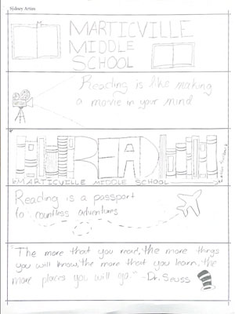
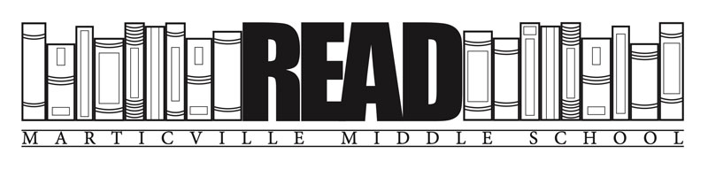

Bookmark Print Project |
|
| Home Bookmark Print Project Digital Photos Project Infographic Project Video Project | |
|

Thumbnail Sketches |
Whenever I start a new project, I find it very helpful to sketch out what it is that I want to create. That way I have a better idea of how I want things to look on my final product. The assignment for this project was to design and print bookmarks for a local middle school. When first starting on this print project I sketched out five ideas. I eventually settled on one of the sketches after adding some addition details and drew my design in Adobe InDesign after I made the proper layout. I received some feedback and made the necessary changes which brough the whole design together. When I was finished with my design, I grouped up with some fellow classmates to add all our designs into one layout. This made the printing process faster and more efficient. During this process of merging our designs we removed the layout marks so they would not show up on the final product. Once all the designing was done, we sent the file to the Presstek Platemaker. This then created the plate that would be used to make the bookmarks. When the plate was finished being created, we used the Ryobi press to print the bookmarks on the designated paper. When those were dry, we used a hydraulic paper cutter to trim the bookmarks to the designated size of 2x8 inches. The final bookmarks were printed 75 times and are going to be sent to the Marticville Middle School library so the students can use them when they read. |
|

Final Bookmark Design |
|
| Home Bookmark Project Digital Photos Project Infographic Project Video Project | |
|
©2023 Sydney Artim | |